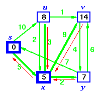

| Data Structures and Algorithms |
| 10.2.1 Predecessor Lists |
The predecessor list is an array of indices, one for each vertex of a graph. Each vertex' entry contains the index of its predecessor in a path through the graph.
|  | In this example, the red arrows show the predecessor relations,
so the predecessor list would be:
|
Key terms |
| Back to Dijkstra's algorithm | Back to the Table of Contents |